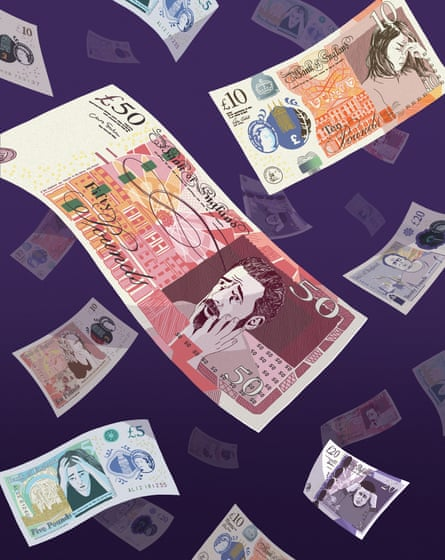

I am a generous tipper. I’ve always thought, to the extent that I have thought about it at all, that this is a positive trait. Recently, however, I’ve begun to wonder. Is it normal to feel a deep sense of anxiety after ordering a takeaway pizza, then realising there is no change in the house? Does everyone spend their spare time searching Google to find out if one should tip the Waitrose delivery driver – or whether to do so might cause offence? Are hotel stays meant to be such a stressful experience, requiring constant calculations to determine the appropriate amount of cash to reward every personal interaction?
These are the kinds of questions that arise while I’m reading Money on Your Mind: The Psychology Behind Your Financial Habits . Written by Vicky Reynal, Britain’s first self-styled “financial psychotherapist”, the book outlines a wide range of unhelpful financial behaviours, offering something that will resonate with almost every reader, and makes a convincing case that these are rooted in our emotions – driven by fears and desires – and influenced by past experiences. Perhaps we struggle to spend money on ourselves or others. What do we fear might happen if we do? Some of us are incapable of budgeting. What do we gain from our overspending? We may see our colleagues rewarded with salary increases while we languish on the same pay grade. Why do we struggle to ask for a raise? Are we battling with doubts about our self-worth?
I’m fascinated by what my own financial choices might reveal about my psyche. So, when I go to meet Reynal at her consulting space in Vauxhall, London, I take the opportunity to ask her. Reynal greets me in the manner one would expect from someone who deals with money matters: with a firm handshake and a businesslike demeanour. Smartly dressed in black trousers and shirt under a monochrome patterned blazer, she would not look out of place in any boardroom in the City. After we take our seats, she encourages me to think more deeply about my behaviour. What is behind my compulsion to express gratitude for small acts of service? What do I fear might happen if I don’t? “Is it about wanting to be liked by the other, or wanting the other to think positively of you, even if it is just for a few minutes?” she asks. “I guess the question that pops into my mind would be: is there a part of you that expects people to be critical, so you choose to appease them upfront to avoid that feeling?” I have to admit, this sounds like a definite possibility.
Illustration: Peter Reynolds/The Observer
Ten years ago, Reynal started practising psychotherapy and began to notice how often clients’ problems were linked to finances. We tend to think of money in terms of cold hard numbers: the size of our bank balance, the interest rate on our savings account or credit card debt, the number of years it will take to save a house deposit. We believe our financial decisions to be rooted in rationality. Having worked with enough clients for whom money was the source of emotional distress, Reynal sees things differently. Five years ago, she began describing herself as a financial psychotherapist, helping people explore their money troubles as a formal part of her practice.
In the book, Reynal cites a series of statistics to illustrate how money is causing us all kinds of problems. One UK poll found that 32% of us find it stressful talking about our finances with family and friends. Another found a third of couples had argued about money. People with substantial debt are reportedly more likely to suffer from ulcers and migraines, and six times more likely to experience anxiety and depression. Clearly, an absence of money can have a serious impact on the quality of our relationships and our health. But Reynal sees money troubles among the wealthy, too. “If anything, they feel guiltier about their unhappiness, because there is this conception that money should buy happiness,” she says. “And so, if you’re unhappy despite having a lot of wealth, it brings up a lot of shame and guilt.”
Reynal remembers a conversation in her consulting room that drove this point home. A client came to her with what he described as a “£2m problem”. Reynal assumed the man had somehow run up a huge debt. In fact, it emerged he had been granted an unexpected windfall. “They were completely distraught over it,” she recalls, “and who could they tell that to, hoping to find empathy and understanding and to really help them unpick what’s behind that? There was this real fear of people’s envy, how it would spoil the children, how it would ruin his marriage trying to decide what to spend all this money on. It was a person in distress, even if some people might find it difficult to empathise with that.”
Listening to this story, I do find it a little hard to empathise. I don’t doubt that to this particular client this was a very real problem. On the other hand, to many people struggling through a cost of living crisis, a £2m problem will not sound like much of a problem at all. Reynal’s case is that, while money can cause us real problems, for some, the way we feel about money can be just as challenging. And aren’t all money problems relative? No doubt my own money anxieties would cause some eyes to roll. But by focusing so intently on our individual relationship with money, I wonder if we risk ignoring the factors that create inequality and leave so many people facing financial hardship. “Well, they definitely relate, because what is going on at a macro scale often affects the individual,” says Reynal. “But ultimately, all we can do is manage our own experience of what is going on out there in the world.”
Reynal believes financial literacy can only take us so far. “I do make the point in the book that we have to teach children about money, because it’s not an innate skill. A lot of books out there tell people how they should behave with money and what they should do with money. But, for many, something gets in the way of being the way they want to be with money. So they end up overspending, or being overly greedy, or keeping financial secrets from their partners. And what I tried to do in this book is go to the roots of what experiences, what feelings, what longings, sit behind our money behaviours. It’s only by understanding these that we stand the chance of changing them.”
It won’t surprise you to learn that the process often involves looking back to childhood. Here, Reynal’s own story is illuminating. She is cagey about revealing certain personal details, in case that affects the way clients relate to her in her practice. (When I ask about her accent, she declines to say where it’s from, explaining that clients’ assumptions about her background can often be revealing.) She is happy, however, to reveal certain biographical information. After completing a psychotherapy degree, she studied for an MBA at the London Business School. Why the MBA? “Family pressures?” she laughs. “I think that in itself says a lot about the meaning of money in my family.”
How we spend is rooted in early experiences and attitudes towards money.Photograph: Ben Birchall/PA
Reynal learned early in life how money can cause heartbreak. “My father had two very difficult experiences with money that involved loss, betrayal and deceit,” she says. “The consequences of that – both financial and emotional – affected the whole family negatively.” Through therapy, she explored the meaning of those experiences, which she now describes as “financial trauma”, and their broader ramifications. “Unpacking all the different aspects of that was important to move on from it and to make different choices.” She felt drawn to the idea that she could help others do the same.
Still, for some time, Reynal felt torn between her passion for psychology and the expectation that she go into business – to forge a career in the world of money. Gradually, she began to wonder if the two paths needed to be distinct. She was fascinated by the aspects of her MBA studies that touched on psychology, such as behavioural finance. Fittingly, it was a piece of advice from one of the world’s richest men that encouraged Reynal to combine her two interests. As part of her MBA studies, she was invited to Nebraska to meet the legendary investor Warren Buffett . She asked him how to make such a pivotal decision as how to spend one’s professional life. His message? “Follow your passion, because only by doing something you love, can you ever be good at it.”
Buffett’s advice stuck. After spending some time in the corporate world, Reynal returned to study psychotherapy at postgraduate level. Just as she had been struck by the psychological aspects of finance, she observed how discussions about money were largely absent in therapeutic circles. “If you look at the psychoanalytic literature, there’s thousands of papers written about the relationship with sex, with food, with other objects,” she says. “And so little written about money.” Reynal saw a way to bridge a gap between her two passions – and also, perhaps, to meet both her family’s expectations and her own.
Sometimes, we need to hear advice in terms we’re primed to understand. In the face of family pressure, it took some words of encouragement from Warren Buffett for Reynal to act in her own interests. Intriguingly, she saw something similar happening when she started calling herself a financial psychotherapist, attracting clients who finally had permission to seek help. “More men started coming,” she says. “I think you can interpret that in a number of ways. But I think, especially for some of the older men I saw, who might have grown up in a generation that wasn’t open-minded to psychotherapy, calling it financial psychotherapy might have enabled them to access it with less shame than if they were just going to a psychotherapist.”
The behaviour Reynal hears about in the consulting room and which she describes in Money on Your Mind , ranges from the mundane to the extreme. Some people engage in unsustainable shopping habits, others steal from their employers or blow their life savings engaging in “findom” (financial domination), a sexual kink in which the participant derives pleasure from giving money for nothing tangible in return. On the spectrum of money troubles, I feel reassured that my anxiety around tipping must fall at the less troubling end of the scale. Nevertheless, Reynal’s questions point to the way even my seemingly mundane behaviour may still be emotionally revealing. What does tipping represent for me? What does my anxiety say about the way I see myself and what I expect of others?
Addressing the way money affects our relationships, Reynal writes: “Arguments about money are rarely about money.” I think about the times my partner and I have argued about money. Were these disagreements really about money or were they about other things, such as fearing the loss of independence – or coming to terms with new responsibilities? Thinking about these questions, I realise how many of our relationships have a financial aspect to them. Money pervades everything. Examining our emotions may give us a way to understand how we feel about it. But should we all be thinking about money in order to understand our emotions? “It’s a window into something, you know?” says Reynal. “By being curious about why you behave a certain way with money, you can find out something about yourself.”
There are rarely easy answers when it comes to self-discovery, says Reynal. Regular readers of financial self-help literature may be disappointed to find Money on Your Mind lacking in investment tips or simple saving strategies. That’s an attitude Reynal has encountered among money-minded people who seek therapy. “It takes a bit of time to break through that so that we can get into a more reflective space,” she says. “We can get into: ‘What is this really about?’” Then there are those who seek to avoid money discussions altogether. For Reynal, the remedy is the same: “Understanding it more, understanding our relationship with it more, will ease our anxiety,” she says. “But to do that, we need to start talking and thinking about it.”
Money on Your Mind: The Psychology Behind Your Financial Habits by Vicky Reynal is published by Lagom at £16.99